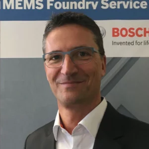

Laermer Franz & Majoni Stefan Abstract
MEMS Past and Present
Franz Lärmer and Stefan Majoni, Robert Bosch GmbH, Germany
MEMS has virtually shaped a new industry. It started from inertial sensors for the automotive area to increase the safety of driving a car by anti-skidding systems, as well as passenger safety by airbag protection systems in crash and roll-over situations. Silicon sensors later conquered the consumer area by adding a huge spectrum of new functions to smartphones and other portable devices.
This market extension is making the life of consumers easier and more comfortable. The integration of artificial intelligence (embedded AI) adds even more intelligence to smart multisensor-modules. Another market extension is the implementation of BioMEMS chips into medical devices for molecular diagnostics. With the help of BioMEMS, we are expanding the range of our established Vivalytic platform for the diagnostics of infectious diseases at the point of care to multiplex degrees unreachable so far. Hundreds of different diagnostic targets will be discovered in parallel by a single test on our Vivalytic platform in future.
New trends in this industry are the integration of MEMS with CMOS, the use of specific raw wafers and process mergers with assembly. This encompasses fabrication of MEMS structures within the ASIC process, as well as back-end integration on top of the ASIC. Other solutions are “ASIC as a cap” for MEMS, merging wafer and assembly processes. Integration yields size- and cost-benefits and performance increases resulting from lower parasitic capacitances. A new trend is in “cavity SOI wafers” or “CSOI” which implement product-design specific buried cavities, enabling even smarter new applications. Pro’s and Con’s of the different concepts and their specific challenges and impacts on MEMS-foundry based business models will be discussed.
The talk will describe the success story of MEMS as an enabling technology from an industrial point of view. The challenges in bringing a new breakthrough technology to market maturity and high-volume manufacturing will be discussed.
MEMS Past and Present
Franz Lärmer and Stefan Majoni, Robert Bosch GmbH, Germany
MEMS has virtually shaped a new industry. It started from inertial sensors for the automotive area to increase the safety of driving a car by anti-skidding systems, as well as passenger safety by airbag protection systems in crash and roll-over situations. Silicon sensors later conquered the consumer area by adding a huge spectrum of new functions to smartphones and other portable devices. This market extension is making the life of consumers easier and more comfortable. The integration of artificial intelligence (embedded AI) adds even more intelligence to smart multisensor-modules.
Another market extension is the implementation of BioMEMS chips into medical devices for molecular diagnostics. With the help of BioMEMS, we are expanding the range of our established Vivalytic platform for the diagnostics of infectious diseases at the point of care to multiplex degrees unreachable so far. Hundreds of different diagnostic targets will be discovered in parallel by a single test on our Vivalytic platform in future.
New trends in this industry are the integration of MEMS with CMOS, the use of specific raw wafers and process mergers with assembly. This encompasses fabrication of MEMS structures within the ASIC process, as well as back-end integration on top of the ASIC. Other solutions are “ASIC as a cap” for MEMS, merging wafer and assembly processes. Integration yields size- and cost-benefits and performance increases resulting from lower parasitic capacitances. A new trend is in “cavity SOI wafers” or “CSOI” which implement product-design specific buried cavities, enabling even smarter new applications. Pro’s and Con’s of the different concepts and their specific challenges and impacts on MEMS-foundry based business models will be discussed.
The talk will describe the success story of MEMS as an enabling technology from an industrial point of view. The challenges in bringing a new breakthrough technology to market maturity and high-volume manufacturing will be discussed.